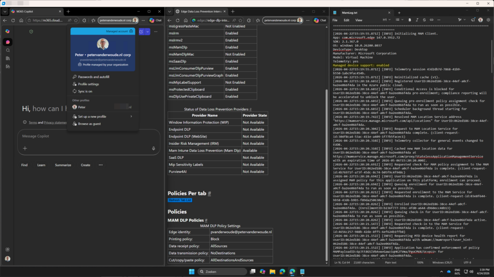

This week is basically sort of a follow-up on last week. This week is all about introducing cross-tenant support for Mobile Application Management (MAM) on Windows devices. That functionality was already briefly mentioned during the previous blog post about protecting downloads in MAM enrolled profiles on managed Windows devices. This week will be more about that functionality specifically. MAM on itself is nothing new, not even for Windows devices. The challenge, however, has been around mixing and matching different environments. That is also often referred to the contractor scenario, in which the user already has a managed device from their own employer and wants to combine that with access to the productivity tools of the customer. For Windows devices that functionality is coming! That is exactly what cross-tenant support for MAM on Windows devices is all about, and this post will be all about that functionality. The minor detail is that configuration wise there are no differences compared to how it is for any other MAM for Windows devices scenario. Besides the look-and-feel not much has changed compared to this earlier blog post about getting started with Mobile Application Management for Windows. That makes this post mainly about awareness of this functionality and a refresher of the main configurations that should be in place, followed by the user experience.
Important: At this moment, the functionality of cross-tenant support for MAM on Windows devices requires the feature flag of Allow MAM enrollment on managed devices to be enabled in Microsoft Edge.
Configuring MAM for Windows devices
When looking at the configuration of MAM on Windows devices, in cross-tenant scenarios, the configuration is pretty similar to the configuration for any other MAM for Windows scenarios. It is a combination between Microsoft Entra (for Conditional Access), Microsoft Intune (for App Protection), and Microsoft Edge. That is the same combination, as with any other combination of MAM for Windows. The main configurations are the app protection policy and the Conditional Access policy. The following steps walk through the basics of those policies and the configurations to think about.
Configuring the app protection policy for MAM for Windows
The app protection policy will be used to protect the configured apps. In other words, MAM for Windows. Within that policy, the configuration can be done to protect the data within the apps. The following nine steps walk through the process of creating that app protection policy for Microsoft Edge on Windows.
- Open the Microsoft Intune admin center portal navigate to Apps > App protection profiles
- On the Apps | App protection policies blade, click Create policy > Windows
- On the Basics page, provide the basic policy information and click Next
- On the Apps page, select Microsoft Edge and click Next
- On the Data protection page, as shown below in Figure 3, specify the following information and click Next
- Receive data from: Choose the source that users can receive data from in the managed app
- Send org data to: Select No destinations, to specify the destinations that users can send data to on the managed device
- Allow cut, copy, and paste for: Choose the source, to specify the option for allowing cutting, copying, and pasting data from the managed app
- Print org data: Choose between Block and Allow, to specify the option for printing from the managed app
- On the Health Checks page, specify the required access requirements – that includes the option in the device conditions to configure the threat level of the device – and click Next
- On the Scope tags page, specify the required scope tags and click Next
- On the Assignments page, specify the required assignment and click Next
- On the Review + create page, click Create
Note: This configuration is focused on protecting data, even on devices managed by another organization.
Configuring the Conditional Access policy for MAM for Windows
When also interested in requiring the use of the app protection policy, it is all about the creation of a Conditional Access policy. That policy can be used to require an app protection policy. The following six steps walk through the process of creating that conditional access policy for Microsoft Edge on Windows.
- Open the Microsoft Intune admin center portal and navigate to Endpoint security > Conditional Access, or open the Microsoft Entra admin center portal and navigate Entra ID > Conditional Access
- On the Conditional Access | Policies blade, click New policy
- On the Assignments section, configure the following for the minimal required assignments sections
- Users or agents: Select the users that should be assigned with this policy
- Target resources: Select Resources > Select resources > Office 365 as the app that should be assigned with this policy
- Conditions: Select at least the following conditions that should be used as additional filters for assignment of this policy
- Device platforms: Select Yes > Select device platforms > Windows for the applicable the platform
- Client apps: Select Yes > Browser for the applicable client app
- On the Access controls section, configure the following for the minimal required access control section
- Grant: Select Grant access > Require app protection policy for requiring app protection with this policy
- Select Enable policy > On to enable this policy
- Select Create to create this policy
Note: At this moment the policy must be a specific combination of the platform and the client app.
Experiencing cross-tenant support for MAM on Windows devices
When the configuration is in place, it is pretty straightforward to experience the configuration. Currently it does still require to enable the feature flag to allow MAM enrollment on managed Windows devices in Microsoft Edge. That feature can be enabled via edge://flags/ and is named Allow MAM enrollment on managed devices. At some point in time that feature will be enabled directly in Microsoft Edge. When that feature is enabled, it is time to actually experience the behavior.
The best places to look for confirmations, are shown below in Figure 1. The MamLog.txt provides the confirmation that the feature is enabled and that the MAM enrollment is successfully performed. The edge://edge-dlp-internals/ page provides the confirmation about the applied MAM policies. And, the profile page provides the confirmation about the multiple corporate profiles.
{kind=link}

Note: At this moment this functionality does not work on same-tenant Windows devices. That means that it is at this moment not yet possible to combine MDM and MAM for Windows devices.
More information
For more information about protected downloads in Microsoft Edge, refer to the following docs.
Discover more from All about Microsoft Intune
Subscribe to get the latest posts sent to your email.